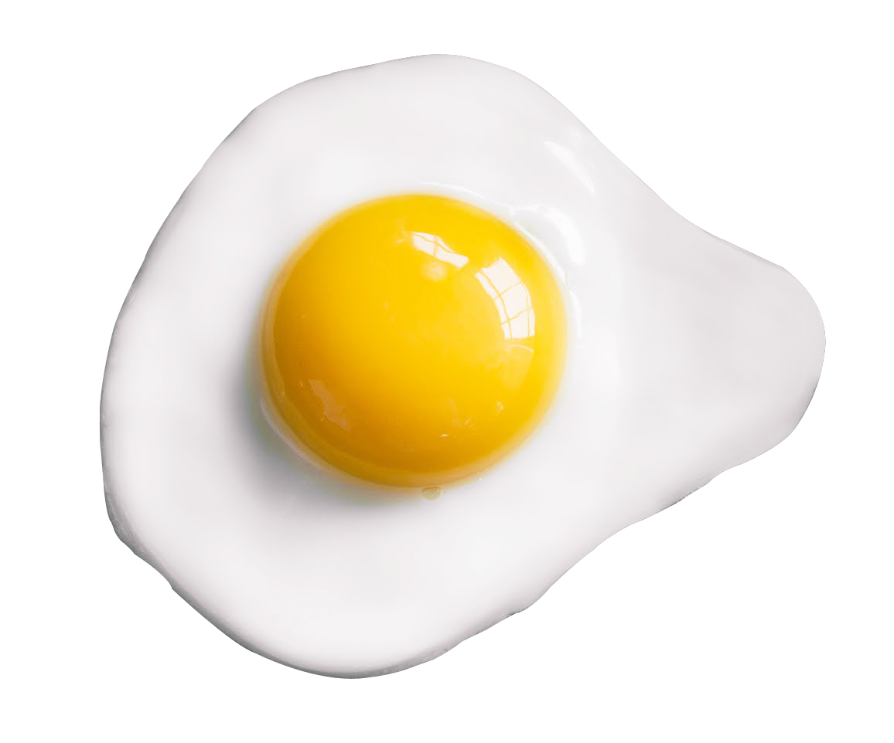

Recipe: The Outstanding Odin Egg

Nothing ordinary about this egg...
Premium one-of-a-kind egg sourced from the depths of The Odin Caves.
Plucked from the nests of Odin bats.
These eggs taste like nothing you've ever had before.
How To Craft:
Ingredients
- One (1) Odin bat egg
- Stove, or other source of fire
- Two (2) plates
- Obtain the Odin bat egg (don't have an Odin bat egg? stop immediately and choose another recipe.)
- Crack the Odin bat egg
- Put a plate over fire
- Plop egg onto plate
- Allow egg to simmer for 19 minutes
- Once it's been 19 minutes and you've absolutely seared the plate, there should be a strong smell
- That smell means done-zo
- Turn off the fire, place delicately cooked egg onto a fresh plate, throw old plate away because you ruined it
- Voila, serve warm and enjoy